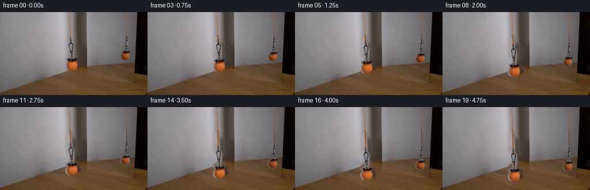
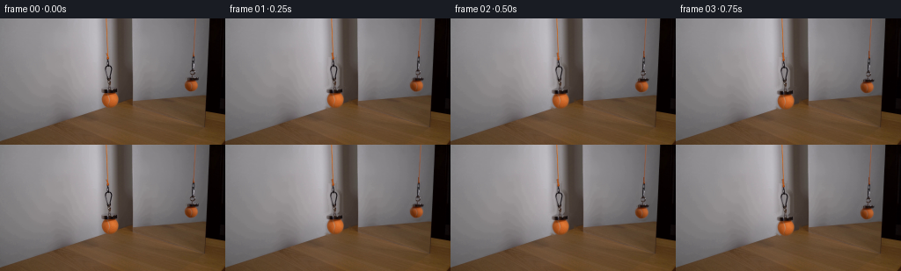

CODING AGENTS AS PIXEL WORLD MODELS
traex/GPT-5.6-Sol · 0116
点击播放 · 原生 RGB 像素
逐轮保存的候选
回放视频、检查图与代码变化。
每份候选均可单独播放。实际图片检查记录在下方工具轨迹中。
候选 01播放与检查图
点击播放 · 原生 RGB 像素


展开代码变化
--- 上一保存版本
+++ 本次保存版本
@@ -0,0 +1,145 @@
+from pathlib import Path
+
+import cv2
+import numpy as np
+from PIL import Image, ImageDraw
+
+import artifact_io
+
+
+CASE_DIR = Path(__file__).resolve().parent
+H, W = 144, 256
+
+
+def aa_mask(parts, scale=4):
+ """Rasterize ellipses/polygons at high resolution for clean, soft silhouettes."""
+ canvas = Image.new("L", (W * scale, H * scale), 0)
+ d = ImageDraw.Draw(canvas)
+ for kind, data in parts:
+ if kind == "ellipse":
+ d.ellipse(tuple(int(round(v * scale)) for v in data), fill=255)
+ elif kind == "polygon":
+ d.polygon([(int(round(x * scale)), int(round(y * scale))) for x, y in data], fill=255)
+ return np.asarray(canvas.resize((W, H), Image.Resampling.LANCZOS), dtype=np.float32) / 255.0
+
+
+def translate(layer, dy, interpolation=cv2.INTER_LINEAR):
+ matrix = np.array([[1.0, 0.0, 0.0], [0.0, 1.0, float(dy)]], np.float32)
+ return cv2.warpAffine(
+ layer, matrix, (W, H), flags=interpolation,
+ borderMode=cv2.BORDER_CONSTANT, borderValue=0,
+ )
+
+
+def composite(frame, source, alpha, dy):
+ moved_rgb = translate(source, dy)
+ moved_a = translate(alpha, dy)[:, :, None]
+ return frame * (1.0 - moved_a) + moved_rgb * moved_a
+
+
+def draw_cord(frame, x, y0, y1, reflected=False):
+ """Draw the newly exposed lower portion of a taut orange cord."""
+ # Supersampling makes the very thin cord stable during subpixel motion.
+ s = 4
+ patch = Image.fromarray(np.clip(frame, 0, 255).astype(np.uint8)).resize(
+ (W * s, H * s), Image.Resampling.NEAREST
+ )
+ d = ImageDraw.Draw(patch)
+ if reflected:
+ edge, core = (92, 57, 49), (146, 82, 44)
+ width_edge, width_core = 3, 1
+ else:
+ edge, core = (128, 74, 48), (190, 97, 35)
+ width_edge, width_core = 4, 2
+ # Almost vertical, with the tiny camera-visible slant already in frame 00.
+ p0 = (int(round((x - 0.35) * s)), int(round(y0 * s)))
+ p1 = (int(round(x * s)), int(round(y1 * s)))
+ d.line([p0, p1], fill=edge, width=width_edge * s // 2)
+ d.line([p0, p1], fill=core, width=max(1, width_core * s // 2))
+ rendered = np.asarray(patch.resize((W, H), Image.Resampling.LANCZOS), dtype=np.float32)
+ # Only replace a narrow lower-cord strip; all other original pixels stay locked.
+ cord_alpha = np.zeros((H, W), np.float32)
+ cv2.line(cord_alpha, (int(round(x)), int(y0)), (int(round(x)), int(round(y1))), 1.0,
+ 3 if not reflected else 2, cv2.LINE_AA)
+ cord_alpha = cv2.GaussianBlur(cord_alpha, (3, 3), 0.35)[:, :, None]
+ return frame * (1.0 - cord_alpha) + rendered * cord_alpha
+
+
+def main():
+ first = np.asarray(Image.open(CASE_DIR / "first_frame.png").convert("RGB"), dtype=np.uint8)
+ assert first.shape == (H, W, 3)
+
+ # Silhouette of the real hanging assembly. The polygon preserves the dark,
+ # irregular magnet and its mounting plate; the ellipse preserves ball texture.
+ main_alpha = aa_mask([
+ ("polygon", [
+ (120.0, 43.5), (124.0, 43.5), (124.5, 51.5),
+ (128.2, 54.0), (130.0, 58.0), (129.8, 75.5),
+ (127.0, 79.0), (137.5, 80.5), (140.0, 83.0),
+ (138.0, 85.5), (133.5, 86.5), (119.0, 86.0),
+ (114.0, 84.0), (114.5, 81.0), (120.5, 78.0),
+ (121.0, 72.0), (118.7, 58.0), (120.0, 51.0),
+ ]),
+ ("ellipse", (113.5, 82.0, 140.0, 104.5)),
+ ])
+
+ # Same setup seen in the mirror: smaller and darker from perspective/reflection.
+ reflection_alpha = aa_mask([
+ ("polygon", [
+ (218.0, 41.5), (221.5, 41.5), (221.0, 50.0),
+ (219.8, 56.0), (222.0, 59.0), (221.5, 64.5),
+ (225.5, 68.0), (225.0, 70.5), (221.5, 72.5),
+ (212.0, 72.0), (211.0, 69.0), (216.0, 65.5),
+ (217.0, 57.0), (217.0, 48.0),
+ ]),
+ ("ellipse", (208.5, 68.5, 226.0, 84.0)),
+ ])
+
+ # Reconstruct only the surfaces hidden by the two initial assemblies. A
+ # slightly enlarged inpaint mask avoids leaving old dark/color fringes.
+ combined = np.maximum(main_alpha, reflection_alpha)
+ removal = cv2.dilate((combined > 0.035).astype(np.uint8) * 255,
+ np.ones((5, 5), np.uint8), iterations=1)
+ rgb_bgr = cv2.cvtColor(first, cv2.COLOR_RGB2BGR)
+ clean_bgr = cv2.inpaint(rgb_bgr, removal, 4.0, cv2.INPAINT_TELEA)
+ clean = cv2.cvtColor(clean_bgr, cv2.COLOR_BGR2RGB).astype(np.float32)
+
+ source = first.astype(np.float32)
+ frames = [first.copy()]
+
+ for i in range(1, 20):
+ t = i / 19.0
+ # Slow hand-controlled lowering: smooth starts/stops, total 27 pixels.
+ eased = t * t * (3.0 - 2.0 * t)
+ dy = 27.0 * eased
+
+ frame = clean.copy()
+
+ # Retain the untouched upper cords from the source image. Their old lower
+ # portions are overwritten by clean background before longer cords are laid.
+ # Alpha blends the original segments back so upper anchors remain fixed.
+ upper_main = np.zeros((H, W), np.float32)
+ upper_main[:44, 117:126] = 1.0
+ upper_refl = np.zeros((H, W), np.float32)
+ upper_refl[:42, 216:224] = 1.0
+ keep = np.maximum(upper_main, upper_refl)[:, :, None]
+ frame = frame * (1.0 - keep) + source * keep
+
+ # The cord becomes longer while its ceiling-side end stays motionless.
+ frame = draw_cord(frame, 122.0, 39.0, 46.0 + dy, reflected=False)
+ frame = draw_cord(frame, 219.5, 37.0, 44.0 + dy, reflected=True)
+
+ # Both the real assembly and mirror image undergo the same vertical motion.
+ frame = composite(frame, source, main_alpha, dy)
+ frame = composite(frame, source, reflection_alpha, dy)
+
+ frames.append(np.clip(np.rint(frame), 0, 255).astype(np.uint8))
+
+ frames = np.stack(frames, axis=0)
+ assert frames.shape == (20, H, W, 3) and frames.dtype == np.uint8
+ assert np.array_equal(frames[0], first)
+ artifact_io.save(frames, CASE_DIR)
+
+
+if __name__ == "__main__":
+ main()
可观测工具轨迹
实际执行的命令与返回图片。
命令 1exit 0
/bin/bash -lc "cat prompt.txt && printf '\\n--- GENERATION_RULES.md ---\\n' && cat GENERATION_RULES.md"
命令 2exit 127
/bin/bash -lc "find . -maxdepth 2 -type f -printf '%p\\n' | sort && printf '\\n--- first frame metadata ---\\n' && file first_frame.png"
命令 3exit 0
/bin/bash -lc "sed -n '1,240p' artifact_io.py"
命令 4exit 0
/bin/bash -lc "python - <<'PY'
from PIL import Image
import numpy as np
im=np.array(Image.open('first_frame.png').convert('RGB'))
print(im.shape, im.dtype, im.min(), im.max())
print('mean', im.mean((0,1)), 'std', im.std((0,1)))
# percentile per channel
for c,n in enumerate('RGB'):
print(n,np.percentile(im[:,:,c],[0,1,5,10,25,50,75,90,95,99,100]))
# most common exact colors
u,c=np.unique(im.reshape(-1,3),axis=0,return_counts=True)
for idx in np.argsort(c)[-20:][::-1]: print(c[idx],u[idx])
PY"命令 5exit 0
/bin/bash -lc "cat > .tmp/analyze.py <<'PY'
from PIL import Image
import numpy as np
from colorsys import rgb_to_hsv
from scipy import ndimage
im=np.array(Image.open('first_frame.png').convert('RGB'))
r,g,b=im.transpose(2,0,1).astype(int)
# basic candidate masks
masks={
'yellow_rg':(r>95)&(g>75)&(r>g*0.8)&(g>b*1.18)&(r>b*1.25),
'green_ball':(g>60)&(g>r*0.75)&(r>b*1.15)&(g>b*1.2),
'orange':(r>100)&(r>g*1.15)&(g>b*1.1),
'sat':(np.maximum.reduce([r,g,b])-np.minimum.reduce([r,g,b])>45),
'brightwarm':(r>130)&(g>100)&(b<100),
}
for name,m in masks.items():
print('\\nMASK',name,'count',m.sum(),'bbox', (np.where(m)[1].min(),np.where(m)[0].min(),np.where(m)[1].max(),np.where(m)[0].max()) if m.any() else None)
lab,n=ndimage.label(m)
objs=ndimage.find_objects(lab)
comps=[]
for i,sl in enumerate(objs,1):
if sl:
count=(lab[sl]==i).sum()
if count>=3:
yy,xx=np.where(lab==i)
comps.append((count,(xx.min(),yy.min(),xx.max(),yy.max()),(xx.mean(),yy.mean())))
print(sorted(comps,reverse=True)[:20])
# region averages/coarse grid
print('\\ncoarse averages 8x6 cells')
for y in range(0,144,24):
print('row',y, ['%3d,%3d,%3d'%tuple(im[y:y+24,x:x+32].mean((0,1)).astype(int)) for x in range(0,256,32)])
# highly chromatic pixel location binned 16x12
ch=np.maximum.reduce([r,g,b])-np.minimum.reduce([r,g,b])
for name,m in [('chrom50',ch>50),('rg_minus_b',(r+g)/2-b>40),('r_minus_g',r-g>35)]:
print('\\n',name)
for y in range(0,144,12):
print(' '.join(f'{m[y:y+12,x:x+16].sum():3d}' for x in range(0,256,16)))
PY
python .tmp/analyze.py"命令 6exit 0
/bin/bash -lc "cat > .tmp/ascii.py <<'PY'
from PIL import Image
import numpy as np
im=np.array(Image.open('first_frame.png').convert('RGB')).astype(int)
def pchar(px):
r,g,b=px
mx=max(px); mn=min(px); ch=mx-mn
if r-g>35 and (r+g)/2-b>35: return 'O' if r>120 else 'o'
if (r+g)/2-b>25 and r>90: return 'Y' if mx>130 else 'y'
if g-b>25 and r-b>25: return 'G' if mx>120 else 'g'
if mx<35:return '#'
if mx<60:return 'D'
if mx<90:return 'd'
if mx<120:return ':'
if mx<150:return '.'
if mx<180:return '+'
return '@'
def show(x0,x1,y0,y1,step=1):
print('x',x0,x1,'y',y0,y1)
for y in range(y0,y1,step):
s=''.join(pchar(im[y:y+step,x:x+step].mean((0,1))) for x in range(x0,x1,step))
print(f'{y:03d} {s}')
show(105,145,0,110,1)
show(200,235,0,90,1)
PY
python .tmp/ascii.py"命令 7exit 0
/bin/bash -lc "python - <<'PY'
from PIL import Image
import numpy as np
from scipy.ndimage import gaussian_filter1d
im=np.array(Image.open('first_frame.png').convert('RGB')).astype(float)
for roi in [(105,145,40,107),(203,236,35,88)]:
x0,x1,y0,y1=roi
print('\\nROI',roi)
for y in range(y0,y1):
# interpolation from edge robust colors
L=im[y,x0:x0+6].mean(0); R=im[y,x1-6:x1].mean(0)
xx=np.arange(x0,x1); a=(xx-(x0+3))/(x1-x0-6); pred=L[None,:]*(1-a[:,None])+R[None,:]*a[:,None]
dist=np.linalg.norm(im[y,x0:x1]-pred,axis=1)
inds=np.where(dist>18)[0]+x0
# groups
groups=[]
if len(inds):
starts=np.r_[0,np.where(np.diff(inds)>1)[0]+1]; ends=np.r_[starts[1:],len(inds)]
groups=[(int(inds[s]),int(inds[e-1]),round(float(dist[inds[s]-x0:inds[e-1]-x0+1].max()))) for s,e in zip(starts,ends)]
print(y,groups)
PY"命令 8exit 0
/bin/bash -lc "python - <<'PY'
from PIL import Image
import numpy as np
im=np.array(Image.open('first_frame.png').convert('RGB'))
for name,(cx,cy) in {'main':(127,92),'refl':(218,76)}.items():
print(name)
for y in range(cy-12,cy+13,2):
print(y, ' '.join('%02x%02x%02x'%tuple(im[y,x]) for x in range(cx-12,cx+13,2)))
PY"命令 9exit 0
/bin/bash -lc "python - <<'PY'
try:
import cv2; print('cv2',cv2.__version__)
except Exception as e: print('no cv2',e)
PY"命令 10exit 0
/bin/bash -lc "python - <<'PY'
from PIL import Image
import numpy as np
im=np.array(Image.open('first_frame.png').convert('RGB'))
for y in [0,5,10,15,20,25,30,35,40,43,45,46,47,48,50]:
print(y,[(x,im[y,x].tolist()) for x in range(118,126)])
print('refl')
for y in [0,5,10,20,30,35,40,42,43,44]: print(y,[(x,im[y,x].tolist()) for x in range(217,225)])
PY"命令 11exit 0
/bin/bash -lc "cat > generate.py <<'PY'
from pathlib import Path
import cv2
import numpy as np
from PIL import Image, ImageDraw
import artifact_io
CASE_DIR = Path(__file__).resolve().parent
H, W = 144, 256
def aa_mask(parts, scale=4):
\"\"\"Rasterize ellipses/polygons at high resolution for clean, soft silhouettes.\"\"\"
canvas = Image.new(\"L\", (W * scale, H * scale), 0)
d = ImageDraw.Draw(canvas)
for kind, data in parts:
if kind == \"ellipse\":
d.ellipse(tuple(int(round(v * scale)) for v in data), fill=255)
elif kind == \"polygon\":
d.polygon([(int(round(x * scale)), int(round(y * scale))) for x, y in data], fill=255)
return np.asarray(canvas.resize((W, H), Image.Resampling.LANCZOS), dtype=np.float32) / 255.0
def translate(layer, dy, interpolation=cv2.INTER_LINEAR):
matrix = np.array([[1.0, 0.0, 0.0], [0.0, 1.0, float(dy)]], np.float32)
return cv2.warpAffine(
layer, matrix, (W, H), flags=interpolation,
borderMode=cv2.BORDER_CONSTANT, borderValue=0,
)
def composite(frame, source, alpha, dy):
moved_rgb = translate(source, dy)
moved_a = translate(alpha, dy)[:, :, None]
return frame * (1.0 - moved_a) + moved_rgb * moved_a
def draw_cord(frame, x, y0, y1, reflected=False):
\"\"\"Draw the newly exposed lower portion of a taut orange cord.\"\"\"
# Supersampling makes the very thin cord stable during subpixel motion.
s = 4
patch = Image.fromarray(np.clip(frame, 0, 255).astype(np.uint8)).resize(
(W * s, H * s), Image.Resampling.NEAREST
)
d = ImageDraw.Draw(patch)
if reflected:
edge, core = (92, 57, 49), (146, 82, 44)
width_edge, width_core = 3, 1
else:
edge, core = (128, 74, 48), (190, 97, 35)
width_edge, width_core = 4, 2
# Almost vertical, with the tiny camera-visible slant already in frame 00.
p0 = (int(round((x - 0.35) * s)), int(round(y0 * s)))
p1 = (int(round(x * s)), int(round(y1 * s)))
d.line([p0, p1], fill=edge, width=width_edge * s // 2)
d.line([p0, p1], fill=core, width=max(1, width_core * s // 2))
rendered = np.asarray(patch.resize((W, H), Image.Resampling.LANCZOS), dtype=np.float32)
# Only replace a narrow lower-cord strip; all other original pixels stay locked.
cord_alpha = np.zeros((H, W), np.float32)
cv2.line(cord_alpha, (int(round(x)), int(y0)), (int(round(x)), int(round(y1))), 1.0,
3 if not reflected else 2, cv2.LINE_AA)
cord_alpha = cv2.GaussianBlur(cord_alpha, (3, 3), 0.35)[:, :, None]
return frame * (1.0 - cord_alpha) + rendered * cord_alpha
def main():
first = np.asarray(Image.open(CASE_DIR / \"first_frame.png\").convert(\"RGB\"), dtype=np.uint8)
assert first.shape == (H, W, 3)
# Silhouette of the real hanging assembly. The polygon preserves the dark,
# irregular magnet and its mounting plate; the ellipse preserves ball texture.
main_alpha = aa_mask([
(\"polygon\", [
(120.0, 43.5), (124.0, 43.5), (124.5, 51.5),
(128.2, 54.0), (130.0, 58.0), (129.8, 75.5),
(127.0, 79.0), (137.5, 80.5), (140.0, 83.0),
(138.0, 85.5), (133.5, 86.5), (119.0, 86.0),
(114.0, 84.0), (114.5, 81.0), (120.5, 78.0),
(121.0, 72.0), (118.7, 58.0), (120.0, 51.0),
]),
(\"ellipse\", (113.5, 82.0, 140.0, 104.5)),
])
# Same setup seen in the mirror: smaller and darker from perspective/reflection.
reflection_alpha = aa_mask([
(\"polygon\", [
(218.0, 41.5), (221.5, 41.5), (221.0, 50.0),
(219.8, 56.0), (222.0, 59.0), (221.5, 64.5),
(225.5, 68.0), (225.0, 70.5), (221.5, 72.5),
(212.0, 72.0), (211.0, 69.0), (216.0, 65.5),
(217.0, 57.0), (217.0, 48.0),
]),
(\"ellipse\", (208.5, 68.5, 226.0, 84.0)),
])
# Reconstruct only the surfaces hidden by the two initial assemblies. A
# slightly enlarged inpaint mask avoids leaving old dark/color fringes.
combined = np.maximum(main_alpha, reflection_alpha)
removal = cv2.dilate((combined > 0.035).astype(np.uint8) * 255,
np.ones((5, 5), np.uint8), iterations=1)
rgb_bgr = cv2.cvtColor(first, cv2.COLOR_RGB2BGR)
clean_bgr = cv2.inpaint(rgb_bgr, removal, 4.0, cv2.INPAINT_TELEA)
clean = cv2.cvtColor(clean_bgr, cv2.COLOR_BGR2RGB).astype(np.float32)
source = first.astype(np.float32)
frames = [first.copy()]
for i in range(1, 20):
t = i / 19.0
# Slow hand-controlled lowering: smooth starts/stops, total 27 pixels.
eased = t * t * (3.0 - 2.0 * t)
dy = 27.0 * eased
frame = clean.copy()
# Retain the untouched upper cords from the source image. Their old lower
# portions are overwritten by clean background before longer cords are laid.
# Alpha blends the original segments back so upper anchors remain fixed.
upper_main = np.zeros((H, W), np.float32)
upper_main[:44, 117:126] = 1.0
upper_refl = np.zeros((H, W), np.float32)
upper_refl[:42, 216:224] = 1.0
keep = np.maximum(upper_main, upper_refl)[:, :, None]
frame = frame * (1.0 - keep) + source * keep
# The cord becomes longer while its ceiling-side end stays motionless.
frame = draw_cord(frame, 122.0, 39.0, 46.0 + dy, reflected=False)
frame = draw_cord(frame, 219.5, 37.0, 44.0 + dy, reflected=True)
# Both the real assembly and mirror image undergo the same vertical motion.
frame = composite(frame, source, main_alpha, dy)
frame = composite(frame, source, reflection_alpha, dy)
frames.append(np.clip(np.rint(frame), 0, 255).astype(np.uint8))
frames = np.stack(frames, axis=0)
assert frames.shape == (20, H, W, 3) and frames.dtype == np.uint8
assert np.array_equal(frames[0], first)
artifact_io.save(frames, CASE_DIR)
if __name__ == \"__main__\":
main()
PY
python generate.py
python - <<'PY'
from pathlib import Path
import numpy as np
from PIL import Image
f=np.stack([np.asarray(Image.open(f'frames/{i:02d}.png').convert('RGB')) for i in range(20)])
s=np.asarray(Image.open('first_frame.png').convert('RGB'))
print('shape/dtype:',f.shape,f.dtype)
print('frame00 exact:',np.array_equal(f[0],s))
print('changed pixels:',[int(np.any(f[i]"'!=f[0],axis=2).sum()) for i in range(20)])
print('"'successive MAE:',[round(float(np.abs(f[i].astype(int)-f[i-1].astype(int)).mean()),3) for i in range(1,20)])
print('outputs:',[(p.name,p.stat().st_size) for p in map(Path,['pixels.npz','inspection.png','transition_check.png','index.html'])])
PY"命令 12exit 0
/bin/bash -lc "python - <<'PY'
import numpy as np
from PIL import Image
z=np.load('pixels.npz')['pixels']
print('packed tensor',z.shape,z.dtype)
# unpack and compare all saved frame PNGs
u=np.empty((20,144,256,3),np.uint8)
t=z.transpose(2,0,1)
u[...,0]=(t>>16)&255; u[...,1]=(t>>8)&255; u[...,2]=t&255
p=np.stack([np.asarray(Image.open(f'frames/{i:02d}.png').convert('RGB')) for i in range(20)])
print('npz equals frames',np.array_equal(u,p))
# Motion centroid from orange-object delta relative to frame zero, lower crop per intended object lanes.
for lane,name in [((108,144),'foreground'),((205,230),'reflection')]:
x0,x1=lane
for i in [0,1,3,6,9,12,15,17,19]:
r,g,b=p[i].transpose(2,0,1).astype(int)
m=(r>g+25)&(r>b+35)&(r>85)
yy,xx=np.where(m[:,x0:x1])
val=round(float(yy.mean()),2) if len(yy) else None
print(name,i,len(yy),val)
print()
PY"命令 13exit 0
/bin/bash -lc "python generate.py && sha256sum first_frame.png frames/00.png pixels.npz generate.py && test -s index.html && test -s inspection.png && test -s transition_check.png && echo 'regeneration and artifact checks passed'"
保存候选 1 份；完成命令 13 次；可验证图片返回 0 张。原始 API 响应与完整日志保留在本地。